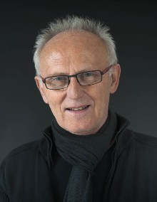

VITA

lebt und arbeitet in Pulheim / Köln
1967 bis 1971 Studium Dipl. Ing.
seit 2004 Freischaffender Künstler
KÜNSTLERISCHE LAUFBAHN
1967 bis 1985 Filmemacher im Genre Kurzfilm
seit 1970 Fotografie
seit 2004 Ölmalerei, Sound und Installation
PREISE/NOMINIERUNGEN
1967-1985 zahlreiche nationale und europäische Kurzfilmpreise
2007 Nominierung Ploop! Award Hörkunstpreis Akademie der Künste Berlin
2007 Nominierung NRW STAATSPREIS Fotografie/Papier
2008 Nominierung Ploop! Award Hörkunstpreis Akademie der Künste Berlin
2008 KUNSTPREIS Landkreis Alzey-Worms
2009 KULTURPREIS der Stadt Hürth mit AHK
2010 Nominierung KUNSTPREIS Ökologie Barlachstadt Güstrow
2012 EUROPA-Künstler 2011 verliehen von der Europa Union
2012 PLAKATENTWURF 3.Preis Kunstverein Kultur Köln 30
2012 KUNSTPREIS Ökologie Barlachstadt Güstrow
ÖFFENTLICHE ANKÄUFE
2007 Rhein-Erft-Kreis
2010 Stadtwerke Pulheim
EINZELAUSSTELLUNGEN
2011 SILENT- DAYLY DAYS - Stadtwerke Pulheim
2010 MENSCHENBILDER- Fotografie und Malerei- Kreishaus Galerie Bergheim FEUERBERGE- Stadtwerke Pulheim
2008 INSELN DES LICHTS- Installation Licht- und Klang Kirche St. Katharina Hürth
2007 BLICKKONTAKT AUGEN-BLICKE - Friedenskirche Sinnersdorf
GRUPPENAUSSTELLUNGEN
2013 06.09 - 22.09. 2013 fusion ACHT -Kunsthalle Junges Forum Siegburg
22.09 - 19.10.2013 19. Kunstausstellung NATUR - MENSCH St. Andreasberg Harz - Katalog
25. KUNSTTAGE RHEIN-ERFT Abtei Brauweiler -Katalog
21. HUNTENKUNST Internationale Kunstmesse Ulft - NL -Katalog
2012 32th MINI PRINT INTERNATIONAL-Gallery L'Etangd'Art France -Katalog
32th MINI PRINT INTERNATIONAL-Fundaci-Tharrats d'Art Grafic Barcelona Spain - Katalog
32th MINI PRINT INTERNATIONAL-Galerie L Ètangd`Art Cadaques Spain -Katalog
32th MINI PRINT INTERNATIONAL-Galerie Wingfeld Barns UK -Katalog
STRÖMUNGEN-16. Ausstellung Kunst & Umwelt-Galerie Wollhalle Güstrow -Katalog
HUNTENKUNST Internationale Kunstmesse Ulft - NL -Katalog
KÜNSTLER ENTDECKEN EUROPA Galerie im Forum Leverkusen
2011 KALEIDOSKOP Altes Kloster Hürth
INTERNATIONALES FOTOFESTIVAL Schömberg - Katalog
KUNSTTAGE RHEIN-ERFT Abtei Brauweiler -Katalog
2010 30th MINI PRINT INTERNATIONAL-Gallery L'Etangd'Art France -Katalog
30th MINI PRINT INTERNATIONAL-Fundaci-Tharrats d'Art Grafic Barcelona Spain -Katalog
30th MINI PRINT INTERNATIONAL-Galerie L Ètangd`Art Cadaques Spain -Katalog
KULTUR IN DER SACKGASSE Köln
30th MINI PRINT INTERNATIONAL-Galerie Wingfeld Barns UK -Katalog
KUNSTGESTALT MENSCH-15. Ausstellung Kunst & Umwelt-Galerie Wollhalle Güstrow -Katalog
MEET 2010 Artprojekt Hannover
KUNST- UND DESIGNPREIS Kunstwerk Lippe- Burg Horn - Katalog
SEH-TEST- Löhrerhof Hürth
KUNSTPREIS Alzey-Worms Schloss Alsheim
ENERGIE-QQArt Galerie Hilden -Katalog
2009 29th MINI PRINT INTERNATIONAL-La galerie L'Etangd'art Bages France -Katalog
INTERNATIONALES FOTOFESTIVAL Museum Haus Bühler Schömberg-Katalog
ENERGIE- FOTOGRAFIE Kunstverein Kunstwoche Jesteburg
29th MINI PRINT INTERNATIONAL-Fundacio Tharrats dÀrt, Barcelona - Katalog
29th MINI PRINT INTERNATIONAL-Galerie L Ètangd`Art Cadaques Spain -Katalog
29th MINI PRINT INTERNATIONAL-Wingfield Barns Galerie UK -Katalog
SCHWINGUNGEN- Altes Kloster Hürth
AUFBRUCH- Galerie am Skulpturenhof Kreishaus Bergheim
2008 28th MINI PRINT INTERNATIONAL- La galerie L'Etangd'art Bages France - Katalog
ANONYM- Kunstraum Kreuzberg-Bethanien Berlin
28th MINI PRINT INTERNATIONAL- Fundacio Tharrats d'Art, Barcelona - Katalog
28th MINI PRINT INTERNATIONAL - Farley`s Yard Trust Chiddinggly, Sussex UK
MENSCHEN(S)KINDER- 1.Hürther Kunstmeile -Katalog-
28th MINI PRINT INTERNATIONAL Cadaques Spain -Katalog-
KUNSTPREIS LANDKREIS ALZEY-WORMS
art in shop - PULHEIMER KUNSTMEILE (G)
FARBE BEKENNEN- Atelier-Galerie-artedos Kempen
2007 SALON - Kunstverein D21 Kunstraum Leipzig
BALANCEAKT - Bürgerhaus Galerie Hürth
PROJEKT Galerie am Werk-Bürgerhalle Leverkusen-Wiesdorf
19. KUNSTTAGE RHEIN-ERFT Abtei Brauweiler -Katalog-
10.KUNST RUND UM - Ateliers im Kupferhof Stolberg
BRÜCKENSCHLAG - Löhrerhof Alt-Hürth
MANU FACTUM - NRW Forum Düsseldorf -Katalog-
MALEREI UND FOTOGRAFIE - Atelier Altes Kino Köln
DIE FARBE ROT - E.ON Energie München
2005 4. RECECYCLING-KUNSTPREIS Herford
17. KUNSTTAGE RHEIN-ERFT Abtei Brauweiler
2004 2. ART PULHEIM